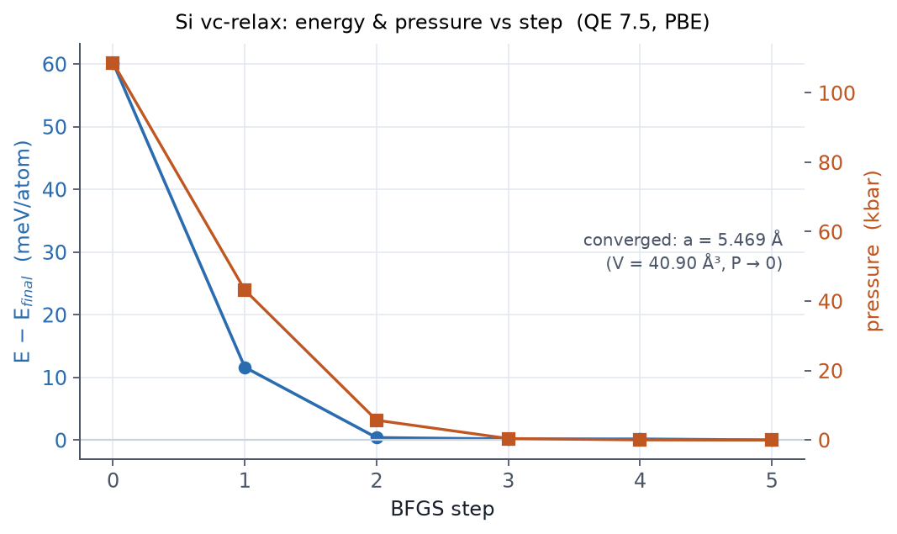

이 페이지에서 다룹니다
무엇을 하는 예제인가
압축된 격자에서 출발해 셀까지 이완하는 vc-relax 로 실리콘의 평형 격자 상수를
찾습니다. 힘과 응력이 어떻게 0으로 수렴하는지, 최종 격자 상수가 실험/이론과
어떻게 비교되는지 확인합니다.
관련 개념은 06 구조 최적화에서 다룹니다.
전체 입력 스크립트 — vcrelax.in
&control
calculation = 'vc-relax'
prefix='si', outdir='./out', pseudo_dir='./pseudo'
forc_conv_thr = 1.0d-4
etot_conv_thr = 1.0d-5
nstep = 100
/
&system
ibrav=2, celldm(1)=10.00, nat=2, ntyp=1, ecutwfc=40, ecutrho=320
/
&electrons
conv_thr=1.0d-9, mixing_beta=0.7
/
&ions
ion_dynamics='bfgs'
/
&cell
cell_dynamics='bfgs', press=0.0, cell_dofree='all'
/
ATOMIC_SPECIES
Si 28.0855 Si.pbe-n-rrkjus_psl.1.0.0.UPF
ATOMIC_POSITIONS (alat)
Si 0.00 0.00 0.00
Si 0.25 0.25 0.25
K_POINTS (automatic)
8 8 8 0 0 0
출발 격자 상수 celldm(1)=10.00 bohr(≈5.29 Å)는 평형보다 압축된 값입니다. 최적화가
셀을 늘려 압력을 0으로 만들 것입니다. SCF conv_thr 을 10⁻⁹ 로 힘 임계보다
충분히 작게 둔 점에 주의하세요(06장).
실행
export OMP_NUM_THREADS=1
mpirun -np 8 pw.x -nk 8 -in vcrelax.in > vcrelax.out
결과 — 힘·압력이 0으로
BFGS 4스텝 만에 수렴했습니다(QE 7.5 실제 실행). 스텝별 압력이 108 kbar에서 0으로 줄어듭니다.
| 스텝 | 전체 에너지 (Ry) | 압력 (kbar) |
|---|---|---|
| 0 | −22.83099 | 108.67 |
| 1 | −22.83813 | 43.17 |
| 2 | −22.83978 | 5.67 |
| 3 | −22.83981 | 0.39 |
| 4 | −22.83981 | 0.00 |

최종 구조
bfgs converged in 5 scf cycles and 4 bfgs steps
Final enthalpy = -22.8398122 Ry
new unit-cell volume = 276.035 a.u.^3 ( 40.904 Ang^3 )
FCC 원시 셀의 부피는 a³/4 이므로, 최종 부피 40.90 ų 에서 격자 상수 a = 5.47 Å 가 나옵니다. 실험값 5.43 Å 보다 약 0.7 % 큰데, 이는 PBE가 격자 상수를 살짝 과대평가하는 알려진 경향입니다.
요점
vc-relax는 원자와 셀을 함께 이완해 평형 격자 상수/부피를 찾습니다.- 수렴은 압력(→0)과 힘으로 판정합니다. 최종 구조는
Begin final coordinates블록에. - vc-relax는
ecutwfc가 작으면 Pulay 응력으로 부피가 부정확해지므로 넉넉히 잡습니다. - PBE는 격자 상수를 약간 크게 예측하는 것이 정상입니다(Si: 5.47 vs 5.43 Å).
관련 개념 챕터
앞 예제는 E3 — 금속 smearing 입니다. 입문 시리즈로 돌아가려면 08 트러블슈팅을 참고하세요.